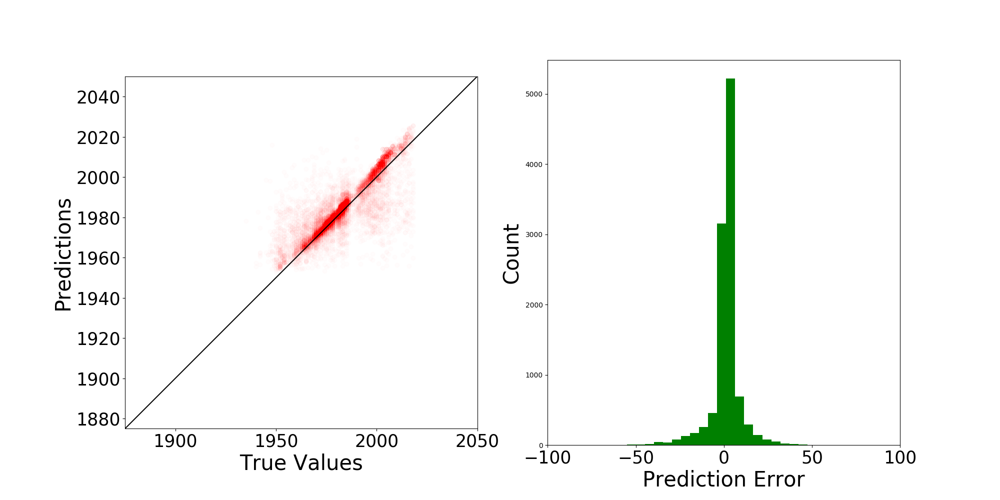

2. Verification and Validation¶
2.1. Anchorage building dataset¶
This section shows an example in which a neural network is built and trained on the building dataset of Anchorage. For each building, the location coordinates (longitude, latitude) and year of construction can be found in the dataset. In this example, 80% of the building were taken for training. The left 20% buildings are used for testing.
import os
import wget
import zipfile
import shutil
import csv
import numpy as np
import matplotlib.cm as cm
import matplotlib.pyplot as plt
import matplotlib.colors as colors
#---------------------------------------------------------------------------------------
# 0. Download data
#---------------------------------------------------------------------------------------
url = 'https://berkeley.box.com/shared/static/jbvyu0ng0zrt75il3ps1qygwellpr8c5.zip'
workDir = 'tmp'
fileName = 'AnchorageBuildings.zip'
print('Beginning file download with wget module')
wget.download(url, fileName)
print('\nFile downloaded. \n')
with zipfile.ZipFile(fileName, 'r') as zip_ref:
zip_ref.extractall('tmp')
try:
dest = shutil.move(fileName, workDir+'/')
except:
os.remove(workDir+'/'+fileName)
dest = shutil.move(fileName, workDir+'/')
#---------------------------------------------------------------------------------------
# 1. Prepare data
#---------------------------------------------------------------------------------------
BIMFileName = 'tmp/AnchorageBuildings.csv'
# read raw data
data = []
with open(BIMFileName, newline='') as csvfile:
reader = csv.DictReader(csvfile)
for row in reader:
lat = float(row['Latitude'])
lon = float(row['Longitude'])
yearbuilt = int(float(row['Year Built']) )
if lat>61.05 and lat<61.2 and lon>-150. and lon<-149.7:
data.append([lon, lat, yearbuilt])
# data is a numpy matrix with columns: [x,y,value]
data = np.array(data)
#---------------------------------------------------------------------------------------
# 2. Train a neural network
#---------------------------------------------------------------------------------------
from surf.NN import SpatialNeuralNet
# define a spatial neural network
# numNei is the number of nearest neighbors to be considered
# writeTmpData is true so that temporary files are written down in ./tmp
nn = SpatialNeuralNet(rawData = data, numNei = 2, writeTmpData=True)
nn.build_model()
nn.train()
#---------------------------------------------------------------------------------------
# 3. Test the neural network
#---------------------------------------------------------------------------------------
nn.test()
The above example can run locally on your computer if you’ve installed pySURF. However, a convenient way to quickly test the example is to run it on Google Colab. Click this link to run on Google Colab.
Upon the complete of the modeling, the prediction errors will be plotted, such as the one shown in

Fig. 2.1.1 Prediction errors for the parameter: year of construction of buildings in Anchorage¶